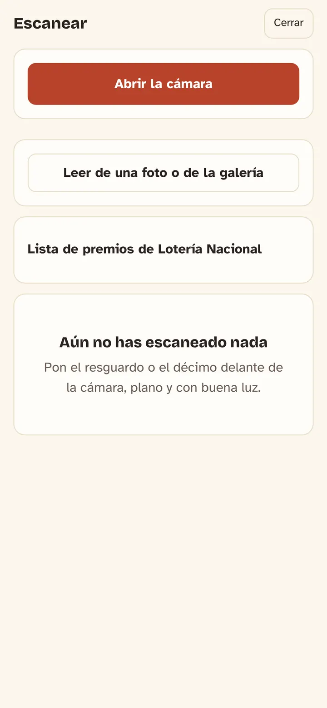
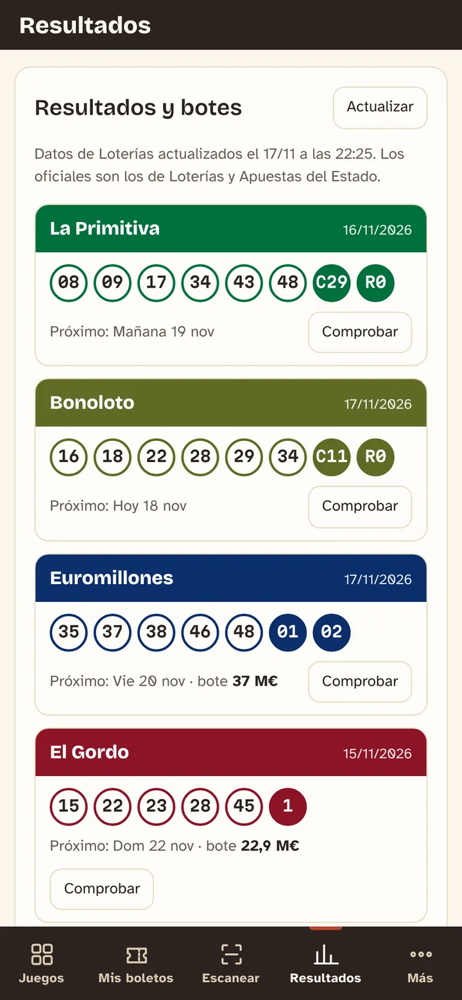

Comprobar premios
App independiente. Combinario no es oficial ni tiene relación con Loterías y Apuestas del Estado (SELAE). No vende apuestas: solo te ayuda a prepararlas, y se validan y se pagan en un punto de venta. Solo para mayores de 18 años.
Los premios caducan a los 3 meses, contados desde el día siguiente al sorteo. La app solo comprueba sorteos de ese plazo; un resguardo o décimo más antiguo sale como «Caducado».
| Qué quieres saber | Dónde |
|---|---|
| Si tu resguardo o tu décimo tiene premio | Escanear: apunta al QR del resguardo o al código de barras del décimo. También puedes leer una foto de la galería o escribir el número del décimo. |
| La lista de premios de un sorteo de Lotería Nacional | Escanear › «Lista de premios de Lotería Nacional» |
| Si tus apuestas guardadas tienen premio | En cada juego, pestaña Comprobar |
| Los últimos resultados y botes | Resultados; cada juego tiene su botón «Comprobar» |
| Aciertos de una quiniela, quinigol o quíntuple | Pestaña Escrutinio: elige la jornada o pega el resultado |


La app siempre dice de cuándo son los datos. La última palabra la tiene el escrutinio oficial de Loterías.